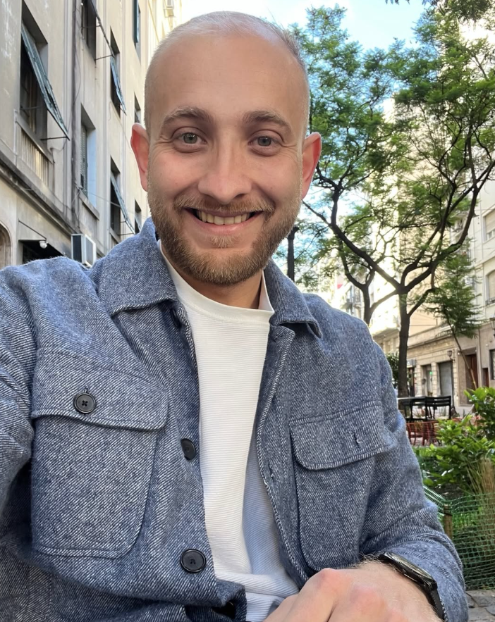
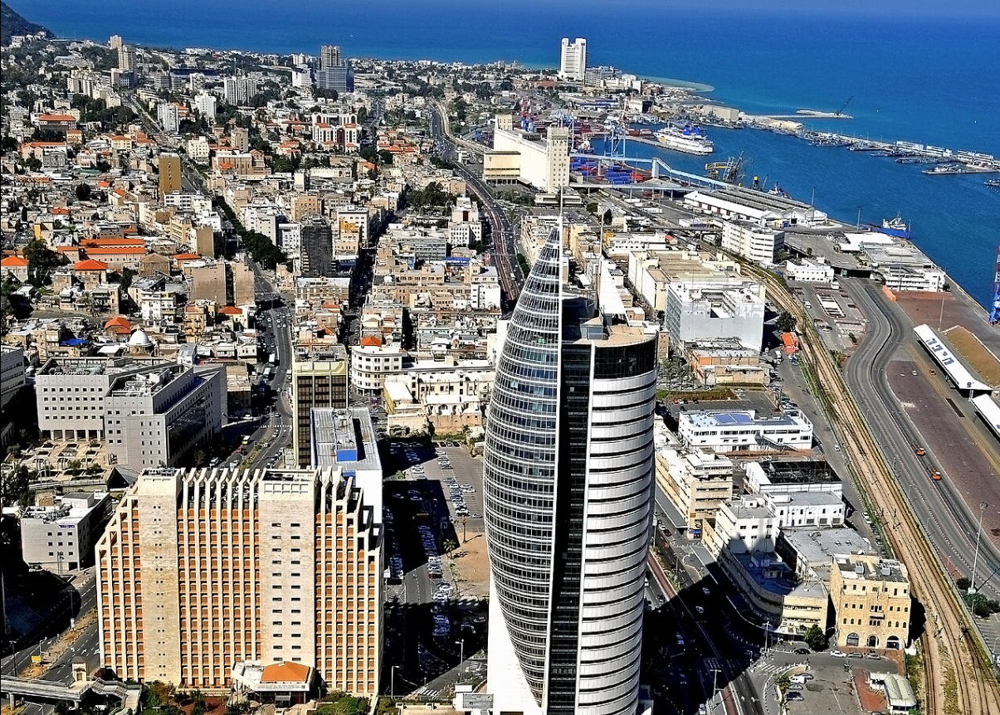
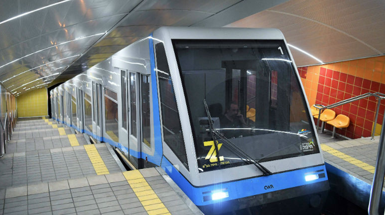
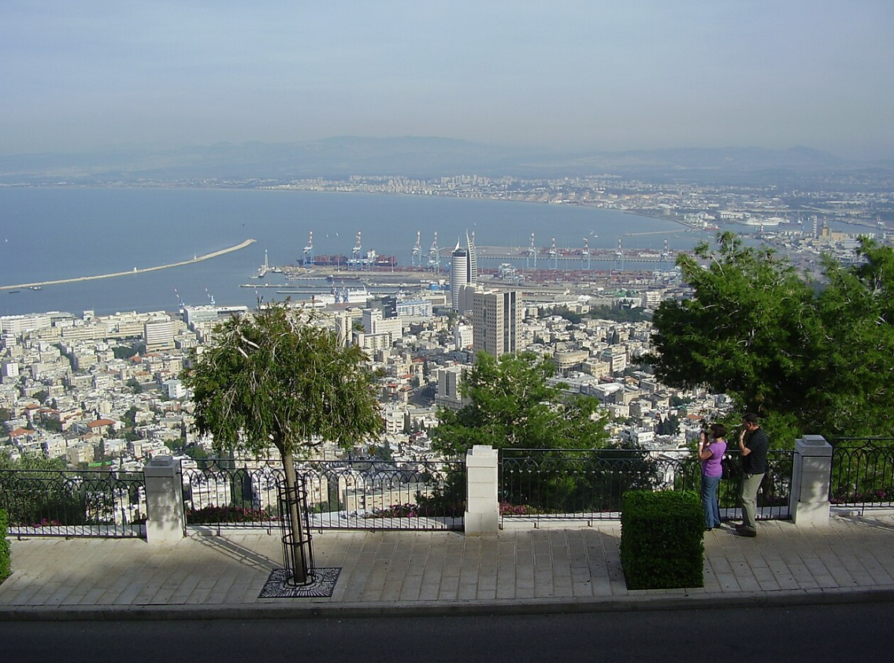
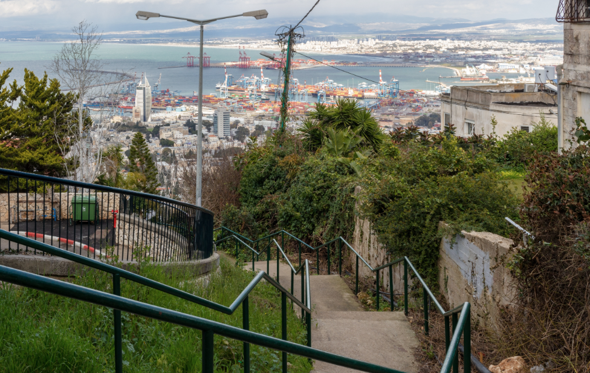
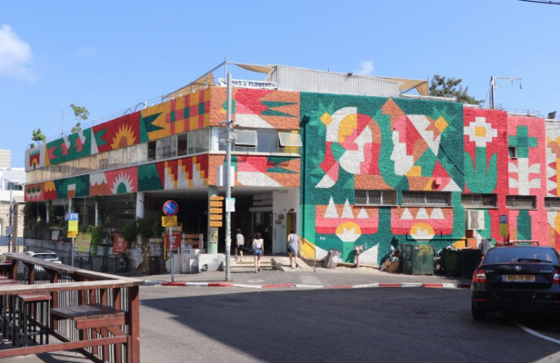
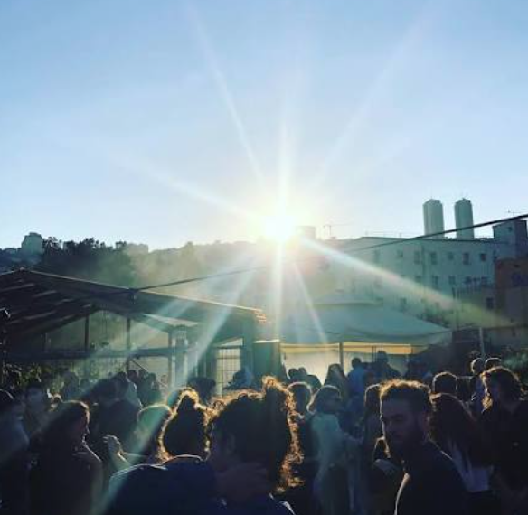

מהנמל, דרך הכרמל, עד שוק תלפיות

בן 32 מהצפון — גדלתי בעכו וחייתי קצת בעיר התחתית בחיפה. פודי בנשמה. אוהב טיולים אורבניים ולהכיר ערים דרך הרגליים — דרך הסמטאות, הריחות והאוכל.
היום אני מתחיל משהו שאני ממש גאה ומתרגש בו — סיורים אורבניים אמיתיים. לא מדריך, לא ספר טיולים. פשוט חיפה כפי שאני מכיר ואוהב אותה.
@kfirwil באינסטגרםזו הפעם הראשונה שאני מוציא סיור כזה. מי שנהנה ובא לו לפרגן — לא חובה בכלל! אבל אם תרצו אפשר להעביר טיפ בביט:
📣 אם אראה שיש ביקוש — אוציא עוד סיורים!
רכבת ישראל — הקו המומלץ ביותר.
ירידה בתחנת חיפה מרכז השמונה (Haifa Center Hashmona) — הליכה של כ-5 דקות לפורט קמפוס ולברדא. ניתן לבדוק לוחות זמנים ב-rail.co.il.
מטרונית קו 1 או 2 — BRT מהיר לאורך ציר הכרמל. עצרת בעיר התחתית (תחנת "שדרות בן גוריון"). מגיעה לאזור הנמל בכ-5 דקות הליכה מברדא.
אוטובוסים בינעירוניים — מרכזית תל אביב: קו 910 (אגד) עד מרכזית חוף הכרמל, ומשם מטרונית לעיר התחתית. משך נסיעה מתל אביב ~60-75 דקות.
הגעה ברכב — אפשרי, אך חנייה בעיר התחתית מוגבלת ויקרה. אם מגיעים ברכב — חניון עיר תחתית ברחוב הנמל או חניון כיכר פריז (ליד הכרמלית).

ברדא היא מאפייה-בית קפה אגדית הממוקמת בלב קמפוס הנמל בעיר התחתית של חיפה.
המקום נודע בלחמי המחמצת המעולים, הקרואסונים, והמאפים הטריים.
פותחים כאן את היום: קפה, מאפה, והסבר מפורט על המסלול שעומד בפנינו — הכרמלית, נקודת התצפית, מסלול המדרגות ושוק תלפיות.
בשעה 10:00 מתחילים לנוע לכיוון הכרמלית.
פתוח א'–ו' מ-07:00 | לא כשר | חניה ברחובות הנמל הסמוכים

יוצאים מברדא לכיוון כיכר פריז — הליכה של כ-5 דקות. הכרמלית היא
הרכבת התחתית היחידה בישראל — פוניקולר תת-קרקעי שנפתח ב-1959
ושופץ לחלוטין ב-2018. עולים בתחנת עיר תחתית ויורדים בתחנת מרכז הכרמל (הגן),
שש תחנות, נסיעה של כ-8 דקות.
מהתחנה העליונה הליכה קצרה של ~5 דקות לטיילת לואי.
כ-5.90 ₪ עם רב-קו | פעיל א'–ה' 06:00–24:00, ו' 06:00–15:00 | תדירות: כל ~12 דקות

"המרפסת של ישראל" — טיילת תצפית פנורמית באורך כ-400 מ' לאורך רחוב יפה נוף. הוקמה ב-1992 לזכרו של לואי גולדשמיט. מציעה נוף עוצר נשימה על מפרץ חיפה, הנמל, גני הבהאים הפנורמיים, והמושבה הגרמנית. ביום בהיר — אפשר לראות עד ראש הנקרה.
פתוח 24/7 | חינם לחלוטין | כדאי להביא מצלמה או לוודא שהטלפון טעון!

אחד הטיולים העירוניים המיוחדים ביותר בישראל — ירידה מרחוב יפה נוף בקצה מרכז הכרמל, דרך סמטאות ציוריות של שכונת הדר הכרמל, עד לשוק תלפיות.
נעלי הליכה מומלצות | הירידה חד-כיוונית — אין טעם לחזור אחורה | בימים חמים — הצטיידו במים

עוף — המנה שאני הכי אוהב. בקר גם זורם מאוד. לוקחים שלישייה, ממשיכים הלאה.
📍 שוק תלפיות, חיפה
פתח במפההסלט התאילנדי החריף — טרי, קל, ומושלם לאמצע היום. בבקשה תעשו לעצמכם טובה ואל תהיו תיריים ותיקחו פאד טאי.
📍 לונץ 4, שוק תלפיות
פתח במפההמנה המומלצת — ולא משהו אחר. פשוט תיקחו.
📍 סירקין 21, שוק תלפיות
פתח במפהאוכל ערבי ביתי אותנטי — אמאל ובנה אכרם מבשלים ממתכונים משפחתיים. אם זו הפעם הראשונה שלכם — לכו על השיש ברק. מנה קצת כבדה, מומלץ לחלוק.
📍 לונץ 7, שוק תלפיות
פתח במפהכיסוניים קטנים ומחרמנים שכולם עשויים ביד. מתכון ברוח הסבתא. יש גם עוגת נפוליאון.
⏰ ה'–ו' בלבד | 11:00–16:00 | שוק תלפיות
פתח במפה
עגלת כנאפה — יש גם טבעוני. אין תירוץ לדלג.
טרמיסו של האיטלקיה בשוק — המלצה אישית שלי. אחד הדברים הכי טובים בשוק.
ההמלצות הן על בסיס הטעם האישי שלי — לא מדריך מסעדות רשמי.
בשוק יש עוד המון מסעדות נהדרות, חלקן מיועדות יותר לישיבה מלאה ופחות למנה בודדת תוך כדי תנועה.
כל הזמן נפתחות מסעדות חדשות בשוק — אם מצאתם פנינה חדשה, שתפו אותי ואעדכן!
פתוח א'–ה' 08:00–18:00, ו' עד 15:00 | חניון יחיאל — סירקין 31 | גג 21 ממש בסמוך — סירקין 21

גג 21 — מתחם גג ענק בסירקין 21, צעדים ספורים מהשוק.
מסיבת טכנו על גג עם נוף פתוח לחיפה. נפתחת ב-15:00 ונמשכת עד 21:00.
הסגנון הוא טכנו. הלבוש חופשי נטול פוזה. כניסה חופשית.
זה הסיום המושלם לסיור.
לסיים ולצאת לא יאוחר מ-16:30 — האוטובוס האחרון ממרכזית המפרץ לתל אביב ב-17:00
שלב א׳ — מגג 21 למרכזית המפרץ:
מרחוב סירקין לוקחים מטרונית קו 1 או קו 4 לתחנת מרכזית המפרץ. נסיעה של כ-15 דקות. האוטובוסים יוצאים לעתים קרובות לאורך ציר הכרמל.
שלב ב׳ — ממרכזית המפרץ לתל אביב:
לוקחים קו 910 אגד ישיר לתל אביב (~75 דקות). האוטובוס האחרון יוצא ב-17:00 — לא לאחר!
רכבת ישראל — שימו לב: ברכבת ניתן לנסוע מתחנת חיפה מרכז השמונה, אבל ביום שישי הרכבות מסיימות שעתיים לפני שבת. בדקו לפני את לוח הזמנים ב-rail.co.il.